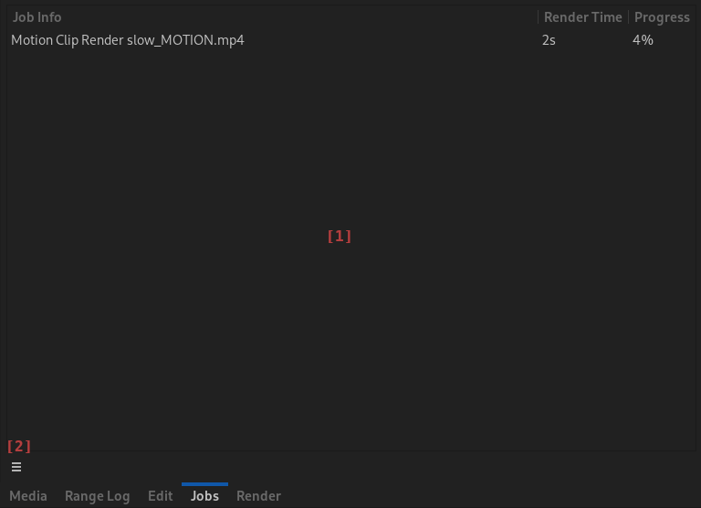

Rendered Items
In addition to externally created video, audio or image media Flowblade Sequences can contain Rendered Items that are created by the application on user requests.
These take noticable time to create and are presented as Jobs in Jobs Panel during creation.
Created items are most often used as Media Items or Timeline Clips. Data items are used as input data to create tracking and stabilizing effects.
Rendered Items are saved in Data Stores. They can also sometimes be saved in user selected places in the file system.
Rendered Item Types
Transition Clips
See chapter Dissolves, Wipes, Blends.
Motion Clips
See chapter Motion Clips-.
Container Clips
See chapter Container Clips.
Generator Clips
See chapter Generators.
Tracking data
See chapter Tracking.
Stabilizing data
See chapter Stabilizing.
G'Mic Clips
See chapter G'Mic Effects.
Jobs Panel

[1] Jobs Table. New Jobs are added here on creation and are rendered in the creation order. Table has three columns:
- Jobs Item Description. This has two parts: type description and item identifier.
- Render Time. Starts counting up when Job Item becomes active and rendering begins.
- Progress. Progress in percentage of current active item render.
[2] Panel Menu.
- Cancel Selected Render.
- Cancel All Renders.
- Show Jobs Panel on Adding New Job.